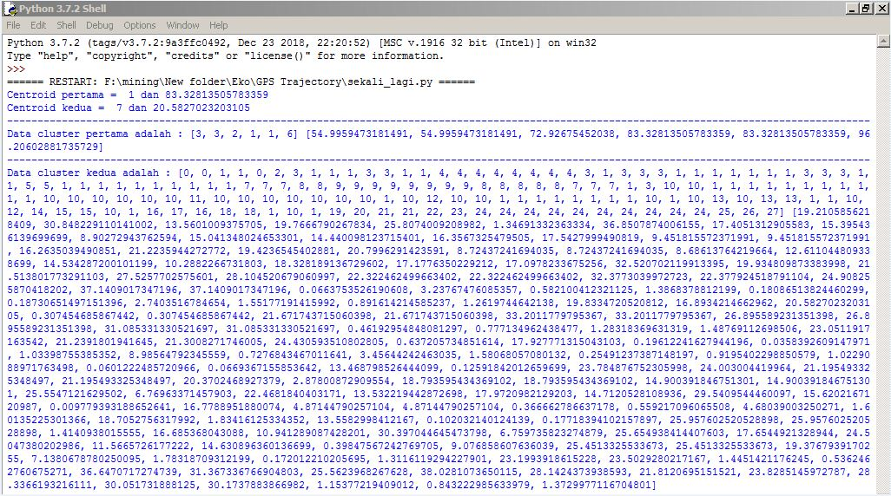
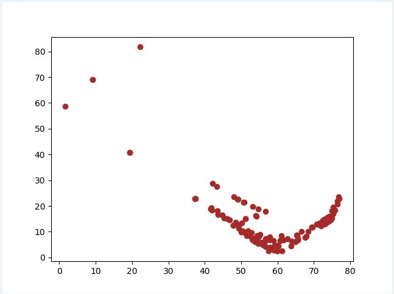

K-means clustering¶
pengertian K-means clustering¶
K-means clustering adalah metode unsupervised learning. yang dimana digunakan pada data yang tidak memiliki label. Tujuan dari metode unsupervised learning salah satunya adalah melakukan clustering. Yaitu mengelompokkan data-data dengan karakter mirip. Untuk melakukan clustering Anda perlu algoritma yang mendukung untuk pengimplementasian dari metode tersebut, salah satunya K-means. Tujuan dari k-means sendiri membagi suatu data dalam beberapa cluster (kelompok) sebanyak k, yang dimana jumlah k-nya ditentukan oleh Anda dan diwakili oleh Mean (Rata-rata). Mean dari setiap cluster diasumsikan sebagai ringkasan yang baik dari setiap observasi dari cluster tersebut.
tahapan k-means clustering¶
- Tentukan jumlah cluster(kelompok) yang kita inginkan.
- Inisiasi centroid untuk setiap cluster secara acak. Centroid adalah data yang merepresentasikan suatu kelompok.
- Hitung kedekatan suatu data terhadap centroid, kemudian masukkan data tersebut ke cluster yang centroid-nya memiliki sifat terdekat dengan dirinya(yang nilainya paling kecil).
- Pilih kembali centroid untuk masing-masing cluster ,yaitu mean (rata-rata) nilai data dari setiap cluster yang sama .
- Ulangi langkah ke-3 sampai tidak ada perubahan anggota untuk semua cluster, atau sampai batas yang ditentukan dari perulangan anggota yang sama.
bahan-bahan yang di perlukan dalam k-means clustering¶
install pandas
pip install pandasinstall numpy
pip install numpyinstall matplotlib
pip install matplotlibinstall sklearn
pip install sklearnpenjelasan script python k-means clustering¶
Seperti yang dapat Anda lihat di bawah , Kides mengiport libraries:
>> csv untuk membaca excel
>> math untuk membuat bilangan akar
>> random untuk membuat bilangan acak
>> Pandas untuk membaca dan menulis spreadsheet
>> Numpy untuk melakukan perhitungan yang efisien
>> Matplotlib untuk visualisasi data
import csv
import math
import random
import pandas as pd
import numpy as np
import matplotlib.pyplot as plt
akar = math.sqrtData yang digunakan yakni dataset sampel data pengemudi (driver) pada aplikasi Go-Track. Dibawah ini adalah script untuk menginput data (baris 1) dan membaca data (baris 2)
def program():
dataset = pd.read_csv("go_track_tracks.csv")mengambil kolom 1 dan 2
kol_mandiri = dataset.iloc[:, 1].values
kol_jumlah = dataset.iloc[:, 2].values
def mencari_centroid_dst():mengambil letak centroid pertama acak dan hasil centroid pertama acak
random1 = []
for i in range(164):
random1.append(i)
hasil_random1 = random.choice(random1)
cen_pertama1 = kol_mandiri[hasil_random1]
cen_pertama2 = kol_jumlah[hasil_random1]mengambil letak centroid kedua acak dan hasil centroid kedua acak
random2 = []
for j in range(164):
random2.append(j)
hasil_random2 = random.choice(random2)
cen_kedua1 = kol_mandiri[hasil_random2]
cen_kedua2 = kol_jumlah[hasil_random2]
jika hasil centroid 1 dan centroid 2 sama maka akan mencari centroid lain sehinggan menghasilkan centroid tidak sama
if (cen_pertama1==cen_kedua1 and cen_pertama2==cen_kedua2):
mencari_centroid_dst()
else:menghitung distance ke centroid 1 dan centroid 2
hasil_hitung_pertama1 = []
hasil_hitung_pertama2 = []
hasil1 = []
hasil2 = []
anggota1_kiri = []
anggota1_kanan = []
anggota2_kanan = []
anggota2_kiri = []
jml_awal1 = []
jml_awal2 = []
for a in range(len(kol_mandiri)):
for b in range(len(kol_jumlah)):
if (a==b):
jarak1 = akar(((cen_pertama1 - kol_mandiri[a])**2) + ((cen_pertama2 - kol_jumlah[a])**2))
jarak2 = akar(((cen_kedua1 - kol_mandiri[a])**2) + ((cen_kedua2 - kol_jumlah[a])**2))
if(jarak1 < jarak2):
hasil1.append(jarak1)
anggota1_kiri.append(kol_mandiri[a])
anggota1_kanan.append(kol_jumlah[a])
hasil_hitung_pertama1.append(jarak1)
jml_awal1.append(jarak1)
hasil_hitung_pertama2.append(jarak2)
else:
hasil2.append(jarak2)
anggota2_kanan.append(kol_jumlah[a])
anggota2_kiri.append(kol_mandiri[a])
hasil_hitung_pertama2.append(jarak2)
jml_awal2.append(jarak2)
hasil_hitung_pertama1.append(jarak1)
menghitung rata-rata tiap kolom sebagai pusat cluster yang baru
hasil1_baru = []
hasil2_baru = []
anggota_clus1 = []
anggota_clus2 = []
seluruh_kiri = []
seluruh_kanan = []
anggota1_kiribaru = []
anggota1_kananbaru = []
anggota2_kiribaru = []
anggota2_kananbaru = []
rata1_a = sum(anggota1_kiri) / len(anggota1_kiri)
rata1_b = sum(anggota1_kanan) / len(anggota1_kanan)
rata2_a = sum(anggota2_kiri) / len(anggota2_kiri)
rata2_b = sum(anggota2_kanan) / len(anggota2_kanan)
for j in range(len(kol_mandiri)):
for k in range(len(kol_jumlah)):
if(j==k):
dist1 = akar(((rata1_a - kol_mandiri[j])**2) + ((rata1_b - kol_jumlah[j])**2))
dist2 = akar(((rata2_a - kol_mandiri[j])**2) + ((rata2_b - kol_jumlah[j])**2))
if (dist1<dist2):
hasil1_baru.append(dist1)
seluruh_kiri.append(dist1)
seluruh_kanan.append(dist2)
anggota_clus1.append(kol_mandiri[j])
anggota1_kiribaru.append(kol_mandiri[j])
anggota1_kananbaru.append(kol_jumlah[j])
else:
hasil2_baru.append(dist2)
seluruh_kanan.append(dist2)
seluruh_kiri.append(dist1)
anggota_clus2.append(kol_mandiri[j])
anggota2_kiribaru.append(kol_mandiri[j])
anggota2_kananbaru.append(kol_jumlah[j])
if (len(hasil1)==len(hasil1_baru) and len(hasil2)==len(hasil2_baru)):
plt.scatter(seluruh_kiri,seluruh_kanan,c='brown')
plt.show()menampilkan cendroid pertamma dan kedua
menampilkan cluster pertama dan kedua
print ("Centroid pertama = ",cen_pertama1,"dan",cen_pertama2)
print ("Centroid kedua = ",cen_kedua1,"dan",cen_kedua2)
print ("----------------------------------------------------------------------------------------------------------------------------------------------")
print ("Data cluster pertama adalah :",anggota1_kiri,anggota1_kanan)
print ("----------------------------------------------------------------------------------------------------------------------------------------------")
print ("Data cluster kedua adalah :",anggota2_kiri,anggota2_kanan)
else:
program()
mencari_centroid_dst()
program()
hasil implementasi:¶
tampilan dari dataset

hasil dari dataset
